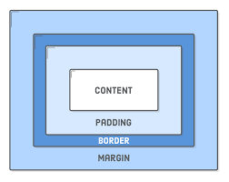

A CSS box model is a box that wraps around each HTML element present. Below is an example of a CSS box model
Below displays a diagram of the CSS box model:
From this diagram we can see that the box model is rendered as multiple seperate rectangular boxes. The CSS box model determines size, position, and properties. The properties seen in the diagram are as follows:
Aswell as these properties, you can change the colour of the box, the background, and more.
The Content of the box may contain data including text, images, or videos. The content cannot stretch beyond the padding, so it stays contained in the center. The content section is able to have a background image or different background colour.
The edge of the padding extends the content area of the box, including the elements padding. The padding's dimensions are changed by the padding property. the padding is extended by the border edge, which includes the elements border. The borders thickness is changed with the property "border -width"
Finally, the margins edge extends the border area. The margin is used to seperate the element from other elements that are nearby. The margin can be changed with its respective property.